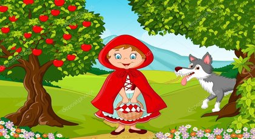

Kırmızı Başlıklı Kız

Bir varmış, bir yokmuş. Evvel zaman içinde, kalbur saman içinde uzak bir ormanın biraz gerisinde bir küçük kız yaşarmış.
Annesi ona üzerinde kırmızı başlığı olan bir pelerin almış. Kız bu pelerini çok seviyormuş ve nereye gitse onu giyiyormuş.
Bu nedenle de herkes ona Kırmızı Başlıklı Kız diyormuş.
Kırmızı başlıklı kız odasında oyun oynarken annesi onu yanına çağırmış. Büyükannesi için yaptığı çörekleri götürmesini istemiş.
Kırmızı Başlıkıl Kız da elbisesini giymiş, üzerine kırmızı başlıklı pelerinini geçirmiş, başlığı çenesinin altında sıkıca bağlamış ve yola çıkmış.
” Ormanı’ndaki yoldan ayrılma sakın!” diye seslenmiş annesi arkasından.
“Ayrılmam anne,” demiş Kırmızı Başlıklı Kız.
Tam ormana girmiş, birkaç adım atmış ki, çalılıkların arasından bir ses duymuş. Yola birden bir kurt fırlamış.
Kırmızı Başlıklı Kız korkusundan az kalsın elindeki sepeti düşürüyormuş. Fakat kurt hiç de öyle düşmanca görünmüyormuş.
“Nereye böyle küçük kız?” diye sormuş kurt.
“Büyükanneme gidiyorum,” demiş Kırmızı Başlıkıl Kız. “ Ormanı’nın sonundaki ilk ev. Büyükannemin sağlığı pek iyi değil.
Ona annemin yaptığı çöreklerden götürüyorum. Kurt sepete doğru elini uzatmış, kırmızı başlıklı kız onun eline bir tane vurmuş.
“Çok ayıp, yaşlı bir kadının yiyeceğine dokunmak sana yakışıyor mu? Demiş.
Kurt ona yaklaşıp
“kötü bir niyetim yotu. Sadece bakmak istedim çöreklere. geçmiş olsun güzel kız, yakında iyileşir unutma” demiş ve yoluna gitmiş.
Kırmızı başlıklı Kız, çiçek toplayarak, kelebeklerin peşinden koşarak, kuş seslerini dinleyerek yolda ağır ağır ilerlerken kurt kestirmeden
Büyükanne’nin evine varmış, kapıyı çalmış.
“Kim o?” diye seslenmiş içeriden yaşlı kadın.
Kurt sesini değiştirerek,
“Benim büyükanne, Kırmızı Başlıklı Kız,” demiş. “Çayın yanında yemen için sana çörek getirdim.”
“Kapı açık gel,” diye seslenmiş Büyükanne. Kurt hemen içeri dalmış. Öyle açmış ki! Günlerdir hiçbir şey yememiş. Bu yüzden Büyükanne’yi
çiğnemeden bir lokmada yutuvermiş. Biraz sonra Kırmızı Başlıklı Kız Büyükanne’nin kapısını çalmış.
“Kim o?” diye seslenmiş kurt yumuşak bir sesle.
“Benim, Kırmızı Başlıklı Kız.”
“Kapı açık güzelim,” diye seslenmiş kurt. “İçeri girebilirsin.”
Kırmızı Başlıklı Kız bir an için tereddüt etmiş. ‘Büyükannemin sesi ne kadar da garip böyle?’ diye düşünmüş. Sonra büyükannesinin
hasta olduğu gelmiş aklına ve kapının mandalını kaldırıp açarak içeri girmiş.
Kurt, Büyükanne’nin geceliğini giymiş, onun başlığını ve gözlüğünü takmış yatakta yatıyormuş. Yorganı boğazına kadar çekmiş,
içerisi karanlık olsun ve suratı fark edilmesin diye de perdeleri iyice kapamış.
“Elindekileri oraya bırak da yanıma gel canım,” demiş kurt.
Kırmızı Başlıklı Kız çöreği yatağın yanındaki küçük masanın üzerine koymuş, ama hemen kurdun yanına gitmemiş. Çünkü Büyükannesi bir tuhaf görünüyormuş.
“Kolların neden bu kadar büyük Büyükanne?”
“Seni daha iyi kucaklamak için!” demiş kurt.
“Kulakların neden büyük, peki?”
“Seni daha iyi duyabilmek için!” demiş kurt.
“Gözlerin neden kocaman, peki?”
“Seni daha iyi görebilmek için,” demiş kurt.
“Dişlerin neden sivri peki?”
“Seni daha iyi yiyebilmek için,” demiş kurt.
Bunu söyledikten sonra kurt artık daha fazla kendine engel olamamış ve yorganı bir tarafa atarak yataktan
fırladığı gibi Kırmızı Başlıklı Kız’ı bir lokmada yutuvermiş. Sonra da karnı doyduğu için keyfi yerine gelmiş ve uykuya dalmış.
Ama ne var ki kurt çok kötü horluyormuş. Evin önünden geçen bir avcı onun horultularını duymuş. Büyükanne’ye kötü bir şey mi oldu acaba,
diyerek kulübeden içeri girmiş. İçeri girer girmez de orada neler olduğunu hemen anlamış. Kurdu dere kenarına kadar götürmüş,
karnını kesip büyükanne ve kırmızı başlıklı kızı içinden çıkarmış.Sonra onların yardımıyla kurdun karnını taşlarla doldurmuş ve dikmiş.
Kurt uyanmış, ne kadar çok susadığını düşünmüş, yanındaki ırmağa doğru eğilmiş, eğilmesiyle birlikte düşmesi de bir olmuş ve o günden sonra kurdu bir daha gören olmamış.